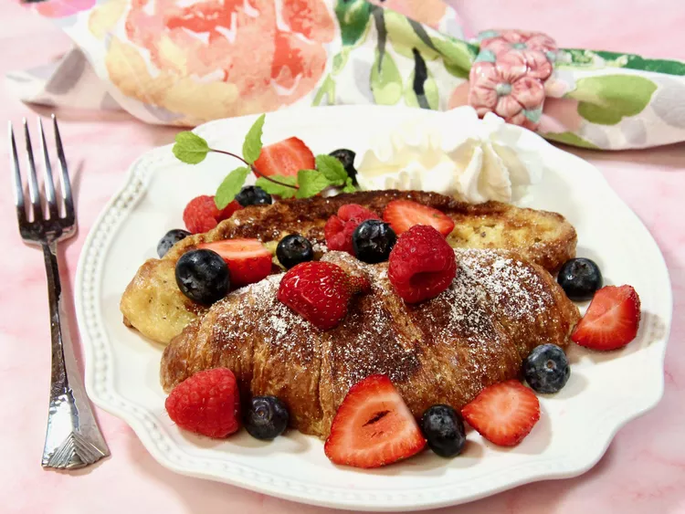

Croissant French Toast

Description
An easy and impressive breakfast or brunch, this recipe is the perfect choice for special occasions or holidays. Serve
warm with your favorite toppings. Some suggestions are powdered sugar, chopped nuts, cinnamon sugar, berries, maple
syrup, blueberry or strawberry syrup, and whipped cream.
Ingredients
- 4 large croissants
- 3 eggs
- 1/2 cup half and half
- 1 tablespoon white sugar
- 2 teaspoons vanilla extract
- 1/2 teaspoon ground cinnamon
- 1/4 teaspoon salt
- 1 pinch ground nutmeg
- 2 tablespoons unsalted butter
Steps
- Preheat the oven to 200 degrees F (95 degrees C).
- Whisk eggs, half-and-half, sugar, vanilla, cinnamon, salt, and nutmeg together in a shallow bowl. Dip each croissant
half into the egg mixture, one at a time, flipping it and lightly pressing down, until well coated.
- Melt the butter in a large skillet over medium heat; add four croissant halves, cut side down. Fry until browned on both
sides, turning once, 2 to 3 minutes per side. Transfer to the oven to keep warm while you cook the remaining croissants.
- Serve warm with your favorite toppings.